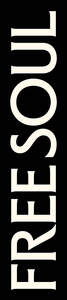
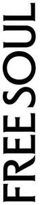

Trade Mark Journal No.2025/042 17 October 2025
UK00004273215 3 October 2025 (5,21,29,30,32,35)
Mark 1

Mark 2

Mark 3
Mark 4
- Class 5
- Dietary and nutritional supplements; Food supplements; Dietary food supplements; Vitamin and mineral food supplements; Vitamin and mineral supplements; Vitamins and vitamin preparations; Health food supplements made principally of vitamins; Health food supplements made principally of minerals; Health food supplements made principally of probiotics; Health food supplements containing collagen; Mineral food supplements; Mineral supplements for foodstuffs; Nutritional supplements; Nutritional supplements containing creatine; Vitamin supplements; Gummy vitamins; Food supplements for non-medical purposes; Dietary supplements; Dietary supplements promoting fitness and endurance; Dietary supplements in powder form; Liquid nutritional supplements; Dietary supplements in the form of gummies; Mineral preparations; Herbal supplements; Herbal preparations; Herbal supplements and herbal extracts; Mineral nutritional supplements; Magnesium supplements; Antioxidant supplements; Cod liver oil; Fish oil for medical purposes; Hydration supplements; Electrolyte supplements; Electrolyte salt supplements; Powdered supplements; Supplements for drink mix; Probiotic supplements; Nutritional supplements in the form of gummies; Chewable nutritional supplements; Health food supplements containing collagen; Nutritional supplements in the form of gummies containing collagen; Amino acid and protein supplements in the form of gummies; Protein supplements; Protein supplement shakes; Protein supplements in powder form; Energy gels (dietary supplements); Dietary supplements and dietetic preparations containing CBD; Nutritional meal replacements; Diabetic foodstuffs; Medical preparations containing CBD; Medical preparations; Medicated balms; Medicated oils; Medicated balms containing CBD; Medicated oils containing CBD; CBD oil.
- Class 21
- Drinks containers; Mugs; Cups; Travel cups; Coffee mugs; Coffee cups; Tumblers; Tumblers for use as drinking glasses; Flasks; Drinking vessels; Water bottles; Aluminium water bottles, empty; Drinking bottles for sports.
- Class 29
- Processed fruits, fungi and vegetables; mushroom blends; vegetable blends; vegetable powder; mushroom powder; Processed fruits, fungi and vegetables (including nuts and pulses); potato snacks; fruit snacks; candied fruit snacks; tofu-based snacks; legume-based snacks; vegetable-based snacks; nut- based snacks; pulse-based snacks; dried fruit-based snacks; soy-based snacks; snacks of edible seaweed; lentil puffs; bean puffs; popped potato snacks; protein balls; processed fruits, fungi and vegetables (including nuts and pulses) containing CBD; potato snacks containing CBD; legume-based snacks containing CBD; vegetable-based snacks containing CBD.
- Class 30
- Iced coffee; Iced beverages with a coffee base; Coffee beverages; Coffee based beverages; Coffee drinks; Prepared coffee and coffee-based beverages; High protein iced coffee; Beverages with a coffee base; Mixtures of coffee; Coffee essences; Coffee flavourings; Coffee flavoured drinks; extracts of coffee for use as flavours in beverages; Decaffeinated coffee; Caffeinated coffee; Flavoured coffee; Coffee bags; Coffee beans; Coffee capsules; Coffee pods; Coffee substitutes; Vegetable-based coffee substitutes; Mushroom-based coffee substitutes; Mushroom coffee blend drinks; Mushroom based drinks; Convenience food and savoury snacks; Convenience pasta and rice-based food; Quinoa-based snacks; Grain-based snacks; Cereal snacks; Puffed corn snacks; Baked goods; Confectionery; Chocolate; Desserts; Dessert puddings; Chocolate bars; Protein bars; Protein balls; Protein cereal-based bars; Protein cereal-based balls; High-protein cereal bars; Convenience pasta and rice-based food containing CBD; Convenience food and savoury snacks containing CBD; Protein bars containing CBD; Quinoa-based snacks containing CBD; Grain-based snacks containing CBD; Protein cereal-based bars containing CBD; Protein bars containing CBD.
- Class 32
- Non-alcoholic beverages flavoured with coffee; Non-alcoholic drinks; Electrolyte drinks; Electrolyte replacement drinks; Electrolyte supplement drinks; Powders for making electrolyte replacement drinks; Powders for making electrolyte supplement drinks; Hydration supplement drinks; Carbohydrate drinks; Non-alcoholic drinks enriched with vitamins and mineral salts; Sports drinks containing electrolytes; Non-alcoholic beverages flavoured with coffee; Whey beverages.
- Class 35
- Retail services relating to the sale and promotion of nutritional products, nutritional supplements, protein supplements; hydration supplements, vitamin supplements, mineral supplements, health supplements, wellness drinks, fitness drinks and drinking vessels; Advertising; Marketing and sales promotions; Online ordering services.
Ara Fitness Limited
Representative: Howes Percival LLP